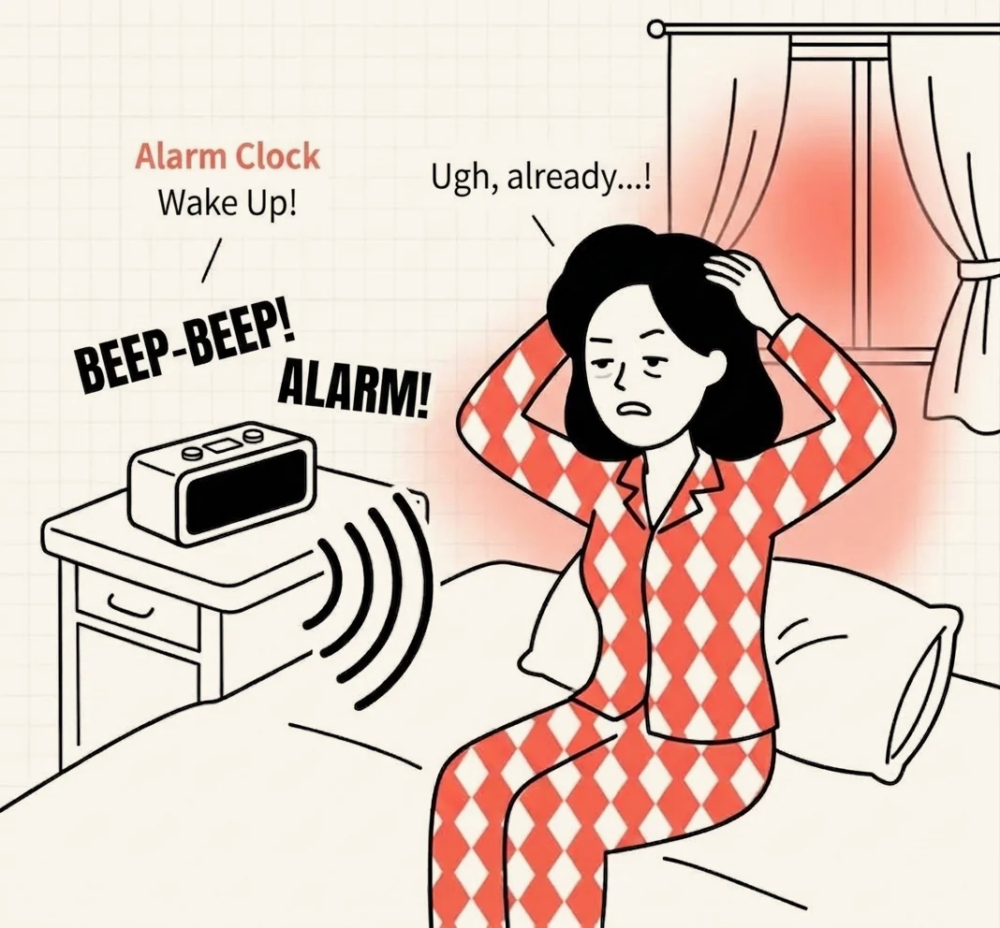
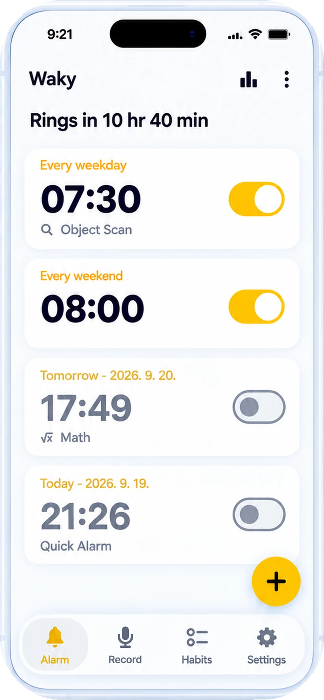
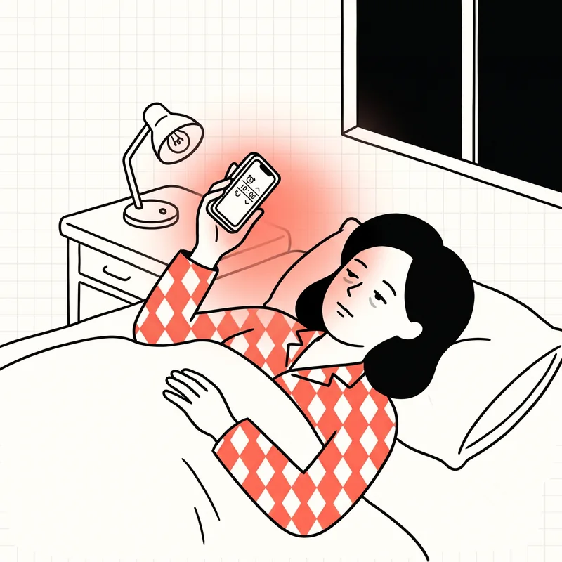
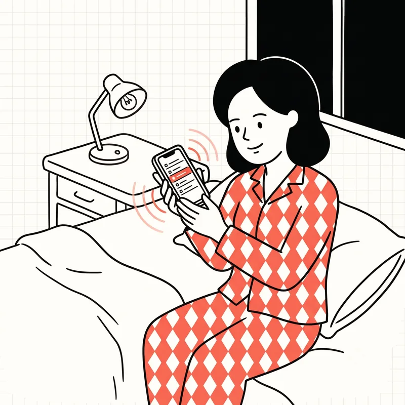
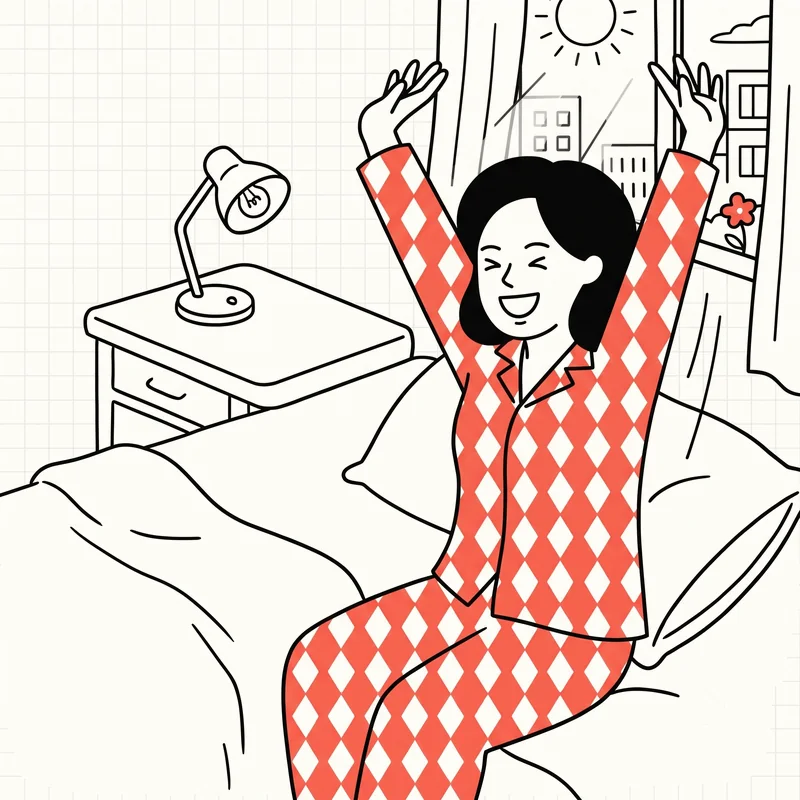

Zaco Labs
Basta spegnere la sveglia e riaddormentarsi
Waky è una sveglia che si spegne solo quando completi una missione. Ti sveglia con un suono registrato da te e poi ti aiuta a iniziare la giornata completando le tue abitudini mattutine.
iOS · Android · Download gratuito

Cosa rende Waky diversa
Invece di rendere la sveglia più forte, l’abbiamo resa più difficile da ignorare.
-
Una sveglia che devi meritarti
La sveglia continua finché non completi una missione che richiede di essere svegli: scansione oggetti, un calcolo o trovare la tessera di colore diverso. Basta spegnerla nel dormiveglia.
-
La tua voce come suoneria
Registra fino a 1 minuto — "Oggi hai quella presentazione, alzati!" o un suono che ami — e usalo come sveglia.
-
Abitudini mattutine appena alzato
Aggiungi ciò che vuoi fare ogni mattina, come bere acqua o fare stretching. Waky te lo ricorda all'ora giusta e lo spunti direttamente dalla schermata di blocco.
-
Un registro dei risvegli che cresce
L'ora in cui ti alzi e quante volte posticipi vengono registrate da sole: una mappa di calore e la tua serie mostrano le tue abitudini a colpo d'occhio.

Tre passaggi per impostarla
Dalla prima apertura alla sveglia pronta passa circa un minuto.
-

Imposta l’orario della sveglia
Scegli a che ora alzarti, proprio come con la sveglia che usi già.
-

Scegli una missione e un suono
Decidi quale missione risolvere per spegnere la sveglia e scegli un suono integrato o uno registrato da te.
-

Completa la missione e alzati
Quando hai finito la missione al mattino, sei già sveglio.
Domande frequenti
Per qualsiasi altra domanda, scrivici un’e-mail.
Cosa posso fare se mi sono abituato alla sveglia e non la sento più?
Perché continuo a dormire anche con più sveglie?
Esiste un'app sveglia che si spegne solo risolvendo una missione?
Posso creare una suoneria con la mia voce?
Come creo le abitudini mattutine?
Oltre alla sveglia, cos’altro aiuta a svegliarsi?
Dove vedo lo storico dei miei risvegli?
Posso usarla per un pisolino?
Come posso contattarvi?
Domattina, alzati davvero
Waky è gratis su iOS e Android.